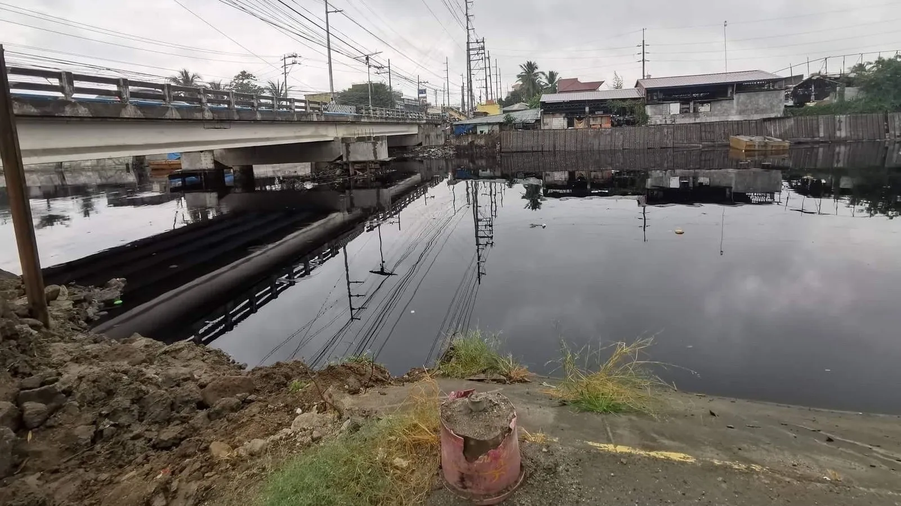
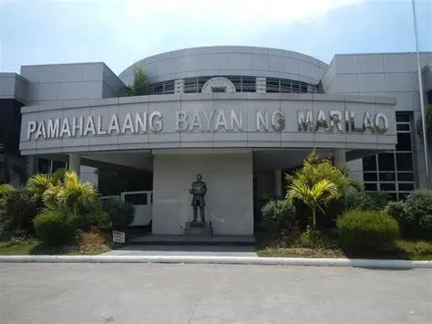
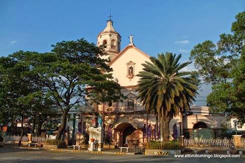

Local Culture
Discover Marilao's traditions, festivals, and welcoming community.
Experience history, culture, nature, and adventure in the heart of Central Luzon.
Explore NowBulacan is a province known for its rich history, cultural heritage, delicious cuisine, and beautiful destinations. It is a place where tradition and modern attractions meet.
Marilao is one of Bulacan's rapidly growing municipalities, offering visitors a mix of shopping, local food, religious sites, and community attractions.
Discover Marilao's traditions, festivals, and welcoming community.
Visit malls, markets, and local businesses offering unique products.
Taste authentic Bulacan delicacies and Filipino favorites.
A historic church known as an important symbol of Philippine history.
A natural destination featuring caves, rivers, and scenic landscapes.
A popular hiking destination with breathtaking views.
Explore Bulacan's historical landmarks and cultural sites.
Enjoy hiking, sightseeing, and outdoor activities.
Experience Bulacan's famous delicacies and local cuisine.



Ready to explore Bulacan? Contact us and create your unforgettable travel experience.